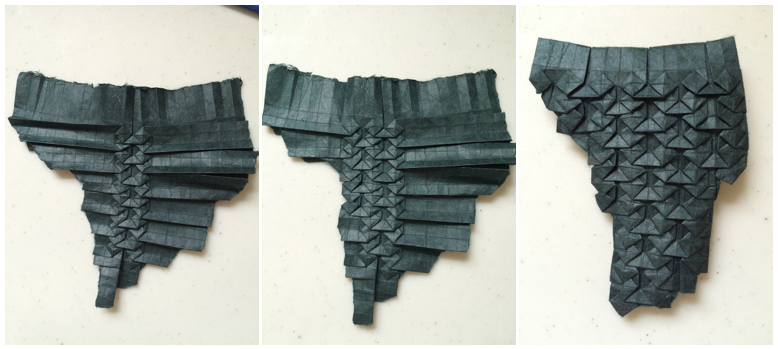

One thing you will never find me writing is something starting with:
Not that I haven't said it before, I'm sure I have, it is such a common human thing to want to organize things into tidy easy to understand categories. But I strongly vow to go against this inclination. This limiting, restrictive mentality does no one any good, and it is especially problematic in the world of programming.
Recently, I read an article by a programmer claiming to not be a certain type of programmer, by describing another category of programmers and labeling themselves as one. The article conveyed that,'it's okay to not love what you work on'. This new category of programmers as she puts it, are the 'get it done programmers'. Does this make anyone else raise an eyebrow? I'm sure everyone has had 'get it done' moments in their life, but to adopt this as a mantra seems pretty defeatist to me.
I'm not discrediting the article altogether, it did raise some important points about the differences in people's problem-solving approaches, learning styles and levels of expertise within technical teams. She includes a few reasonable things for managers and programming peers to consider including, for managers to not assume programmers don't have other passions and interests. Any article that talks about recognizing diversity in work teams is not all bad, in my opinion.
Another point I agree with the author on is that there are confining societal expectations that define what a programmer should be. The preconception that there is no room for anything else in your life that isn't a set of specific activities. It is what you read, what you entertain yourself with, what you write and that you naturally excel in all of these. This is the pressure that made me quit programming for years, making me feel that I wasn't 'born to program'. That I'm 'faking it, and never making it'.
Now that I am back, and finally feel comfortable doing what I do, it seems counterintuitive to create more labels around what people in the industry are like. This is why I disagree with people trying to establish themselves as the new type of programmer. In my opinion, the only way to move forward here is to take a label-free approach with every person and recognize them as humans with abilities, limitations, and interests. Once we stop making absolutist statements and generalizations, we will really start to see that any set of skills is valid. And moreover, that the opportunities to learn new things and apply them in unconventional ways are endless.
Establishing yourself as any particular type inevitably means that you can never be the other kind. If I am _____ I can never say I am ______. Bear with me while I throw a programming analogy at you, but I couldn't help it. I'm borrowing this example that is explained thoroughly by MPJ in this video. So TLDR: There's this problem with object-oriented programming. Let's say you create a hierarchy like so:
-
Robot.drive()
-
CleaningRobot.clean()
-
MurderRobot.kill()
-
Animal.poop()
-
Cat.meow()
-
Dog.bark()
And then you are asked to create a cleaning, murder, robot dog, who does not poop. Using OOP you would be forced to do either of these non-optimal things:
- Create a parent object for all the shared functionality (Gorilla-Banana-Problem)
- Duplicate functionality
So bottom line
So a different approach using composition involves defining functions: barker, cleaner, driver, pooper and killer, and using those to merge them into new objects that will represent whatever you want, say a murder robot dog.
With this in mind, we can bring this concept back to the programmer issue at hand. Instead of trying to define who a programmer is, or trying to predict the future of what your life will be like as a programmer. Take a set of the skills that relate to programming and create yourself as a new person with abilities. When something else comes up that you want to learn, see it as a new tool that you can add to your toolbox, instead of trying to figure out if that skill fits within the constructs of your type.
And one last thing, well two.
You spend a lot of your life at work. Having no passion for what you do and settling for that because other people do it will not bring you happiness. Recognizing the things you do enjoy and trying to find ways to improve the ones you don't may. Take things case by case, no one permanently loves or hates programming, I can assure you everyone has had difficult times coding, and everyone can have satisfying moments.
Finally, learning something you are not naturally gifted in or something you find difficult is very valuable. It makes your brain work in non-habitual ways, it is a practice on humility and helps you build endurance. More on doing what you are not good at here.